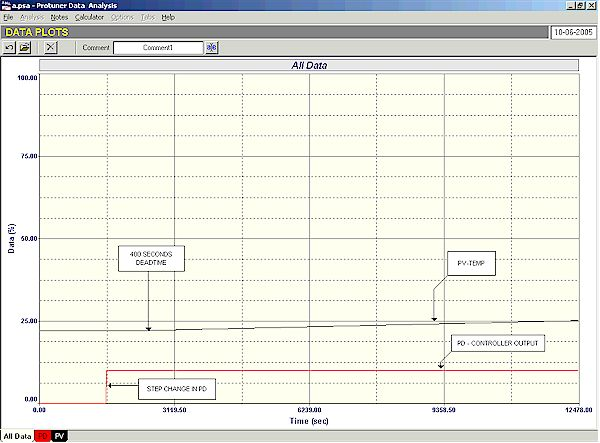
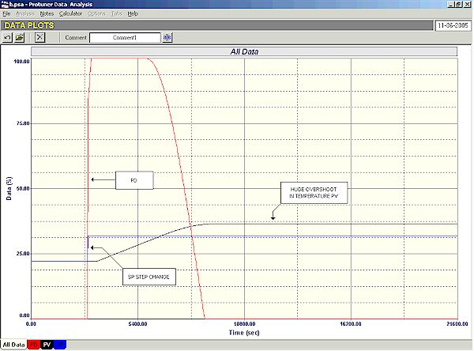
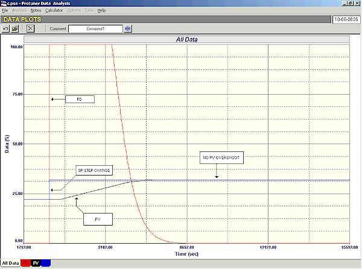
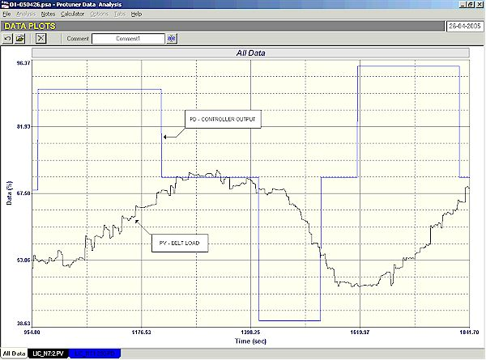
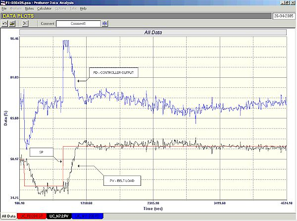

|
| [Home] [About us] [Contact us] [Training] [Optimisation services] [Protuner] |
| [Loop signatures] [Case histories] [Continuous loop performance monitoring] |
|
Control Loop Case History 84 DIFFICULT CONTROL LOOPS IN A BOARD FACTORY (PART 2) I presented some interesting examples of relatively difficult control loops in a board factory in the previously published Case History. Two more examples of what in my opinion are rather unusual processes are given in this article. The first is of a temperature process which is another part of the press discussed last time. I dealt then with the temperature control of the plattens in the middle of the press. The one given here is the control of the temperature of the top section of the press. This is also a very important control which is used to keep the boards straight and prevent bowing. The interesting feature of this process which makes it apparently more difficult to control than usual is that the top section has a large thermal mass, and can be heated relatively quickly. However as there is no cooling system it takes much longer for the temperature to drop. Other examples of similar processes are batch reactors without cooling systems, and several heating processes in the iron and steel industry such as soaking pits, where loads of steel billets are heated in a pit to a certain temperature and kept at that temperature for a predefined period. The main characteristic of this type of processes where heating is much faster than cooling, is that they can absorb heat and hence act as integrating rather than self-regulating processes. Now an important point is that if one uses the integral term in the controller on an integrating process, you will get overshoot on setpoint change. (The reason why this occurs is beyond the scope of this article, but is mostly due to the complex phase relationship of the combined controller and process which now contains two integral terms). Thus if you use the controller's I term you will get overshoot on SP change, and it will take a long time for the process to cool down again to the setpoint. For this reason, overshoot is unacceptable on most of these processes, as it is on this one. An integrating process can only be kept constant, by balancing the input of the process against the output of the process, and in this case it means that the heat input must balance the heat output. Now what is unique on this particular type of process is that the heat output is effectively zero in the short term which means that the temperature can only remain constant (in the short term) when there is no heat input into the process. This means that the balance point on the PD (process demand, i.e. controller output) is also zero. Therefore the valve is shut at balance to keep the temperature constant. (In reality, the valve may be open just a tiny bit at balance to compensate for the relatively slow heat loss into the ambient, but for all intents and purposes it is as good as closed). Thus when a SP change is made to increase the temperature, the controller must open the valve to allow only sufficient heat into the process to raise the temperature to the SP, and must then close. This sounds like quite a difficult "party" trick to achieve. Fortunately for us mere mortals, the mathematics involved in producing feedback control theory (developed back in the 1930's by some of the world's greatest mathematicians of all time), can and does cope with the problem quite adequately. The first thing to note is that for the reason discussed above we cannot use the I term in the controller. This leaves us with the P and the D terms. Now referring back to Loop Signature 13 on my CD on Basic Troubleshooting and Loop Tuning, which discusses when the D term can be used in a controller, it will be seen that the only time you should use the D term on an integrating process is when there is a large lag in the process. Figure 1 shows the open loop test on this particular process. This is a test with the controller in manual, and with a step change being made on the PD. I have not shown the response "zoomed in" (so that it can be more easily compared with the closed loop responses shown in the next two figures), but when it is enlarged, one can see that although there is very long deadtime of approximately 400 seconds, the temperature then goes straight into the ramp. There is no "curve up" into the ramp which would have occurred if there had been a lag.  Figure 1 This means that we do not need the D term, and that leaves only the P term. So this is a case where we must use P only control. Before discussing the tuning further, it must be noted that these processes are very difficult to test because of the fact that they are so terribly slow. Typically it can take an hour or two just to successfully record the result of a single step change on the controller output. Before you can do that, you have to get the process into balance which can take several hours. Once you have done your tuning test you will probably need to need to perform several final tests to obtain the best possible performance. Each of these tests can take an hour or more. Whilst you are doing all this the Production people are sitting around getting very upset because they are not making product, and they are probably thinking of the bonus they are loosing. This means they get very impatient and upset with you, and are reluctant to give you the plant for so long. Therefore to try and keep production disruption to the minimum it is advisable to perform as few tests as possible on the actual plant. My methodology on these is to completely dispense with the usual closed loop test "as found" where you make a SP change with existing tuning. (In reality in a case like this it is usually a waste of time as the tuning in normally so far out). I generally then perform one, or at the most two open loop tests so that I can obtain a good representative model from the test, and then I do the final tuning tests on my Protuner simulator. This works well and if I really got a truly representative model for the open loop test I can put the final tuning into the controller with 95% confidence of success. How does one get the final tuning? Well it is relatively easy. We have seen from the above that only the P term can be used. Now thinking about this problem, we can deduce that with P only control, when a SP change is made, the process must always get to, or go over the new setpoint. It can never "undershoot" irrespective of how small a P value is used. The reason for this is that if you are below setpoint there will be an error which the P term will multiply and thus keep the valve open, and the temperature must then carry on rising (until such time when the valve is fully shut, which can only occur when there is no error between SP and PV). So what value of P should you use? A very small value will get you there, but maybe very slowly. Too big a value will cause overshoot. How do we determine the optimum value? A good tuning package like the Protuner, may be fine and give a reasonably good indication of the final P tuning value, but as the software always calculates figures which will be safe, one may, and usually can, increase the P value to give a faster response. This is where the experimental bit comes in, and where one can try various values of P to get the fastest response. Figure 2 illustrates the closed loop response with the original tuning of P = 8, and I = 13.3 minutes/repeat. One can see the huge overshoot that occurs on a setpoint change caused by the I term.  Figure 2 Figure 3 is the final tuning with a P only control with a P value of 30 in the controller. One can see what a fantastic response is obtained.  Figure 3 So in actual fact what appeared initially to be a complex control problem can actually be solved very easily, once you understand the dynamics and how the control should work. The second example which is of interest is of a control adjusting the amount of feed of the mixed core components being fed into the board machine via a variable speed conveyor belt. The measurement is the height of the load on the belt, and is varied by adjusting the belt speed. This loop had never worked well and was normally run in manual. A closed loop "as found" test with the existing tuning parameters of P = 0.2 and I = 0.02 minute/repeat was conducted. Although not shown here, the control was completely unstable, with the controller PD swinging wildly between the output limits. Bearing in mind the maxim that levels are always integrating except for levels where the product is passing over a weir, experience would have told us that the above tuning parameters would be most unlikely to work, as they would be more applicable to a simple flow self regulating type process. Figure 4 shows the open loop test on this process. Analysis of the test using either the Protuner or the graphical technique given in Loop Signature 3 on the Basic Troubleshooting and Loop Tuning CD shows the process gain has a value of roughly 0.004. This using the tuning rules given in Loop Signature 27, would show that with a P gain of 0.2, an I value of at least 83 minutes/repeat would be needed for stable control. The tiny integral of 0.02 minute/repeat was guaranteed to make the control unstable!  Figure 4 A P gain value of 0.2 is also really far too small for use on a process with a gain of 0.004, and would give terribly slow control. The Protuner tuning gives a suggested P gain of 1.6 and an integral of 10 minute/repeat. These were used in the controller and the tremendously improved control is shown in a final closed loop test in Figure 5.  Figure 5 Incidentally a lot of people would immediately put a PV filter on this loop to take out the noise which can be seen in both figures. In actual fact filters should only ever be used if necessary, which is if the noise is actually causing the final control element to jump around. In a case like this the noise actually coming through the controller and appearing on the PD will have no effect on the variable speed drive, and it is not necessary to filter it. I hope these two examples give a good idea of how really understanding the basics allow one to gain satisfactory control of processes. Remember that the true magic in control is to fully understand what you are doing. Michael
Brown is a specialist in control loop optimisation, with many years of
experience in process control instrumentation. His main activities are
consulting, and teaching practical control loop analysis and
optimisation. He gives training courses which can be held in clients'
plants, where students can have the added benefit of practising on live
loops. His work takes him to plants all over South Africa, and also to
other countries. He can be contacted at: |